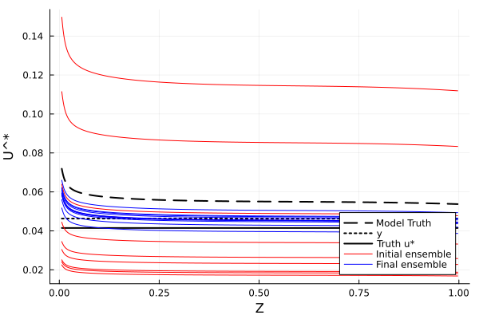
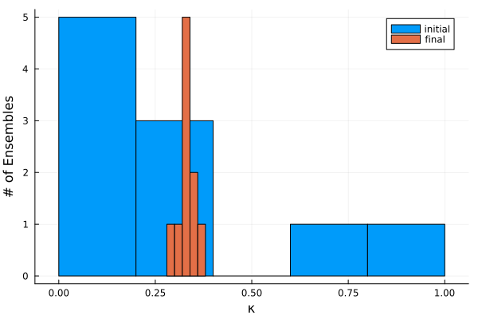

Kappa Calibration Example
Overview
In this example, we use the inverse problem to calibrate the von-karman constant, κ in the equation: u(z) = u^* / κ log (z / z0), which represents the wind profile in Monin-Obukhov Similarity Theory (MOST) formulations. In order to recover the empirically determined κ = 0.4, we use data from the John Hopkins Tubulence Channel Flow, which offers DNS simulations of a channel flow with smooth wall boundary conditions, i.e. z0m ≈ 0 m. The dataset can be found here: https://turbulence.pha.jhu.edu/Channel_Flow.aspx. We use the dataset's u^* as an observable, and each ensemble member estimates u^* through the SurfaceFluxes.jl function surface_conditions, see https://github.com/CliMA/SurfaceFluxes.jl In order to calculate u^*, the function surface_conditions is provided a set of thermodynamic params, a functional form for stability functions (Businger, Gryanick, Grachev), and the constants corresponding to that functional form. In this example, we elect the Businger functions.
Prerequisites
This example depends on standard Julia packages as well as CliMA packages: EnsembleKalmanProcess.jl, CLIMAParameters.jl, SurfaceFluxes v0.6, Thermodynamics v0.10 Note that this example is only compatible with certain versions of these packages.
Example
First, we import relevant modules.
using LinearAlgebra, Random
using Distributions, Plots
using EnsembleKalmanProcesses
using EnsembleKalmanProcesses.ParameterDistributions
const EKP = EnsembleKalmanProcesses
using Downloads
using DelimitedFiles
using CLIMAParameters
const CP = CLIMAParameters
FT = Float64
import SurfaceFluxes as SF
import Thermodynamics as TD
import Thermodynamics.Parameters as TP
import SurfaceFluxes.UniversalFunctions as UF
import SurfaceFluxes.Parameters as SFP
using StaticArrays: SVector
include("setup_parameter_set.jl")Next, we download and read data from the John Hopkins Tubulence Channel Flow dataset, specifically those concerning mean velocity and its variance over various heights. The parameters defining the dataset are given by:
- u_star = 4.14872e-02
- δ = 1.000
- ν = 8.00000e-06
- Re_tau = 5185.897
mkpath(joinpath(@__DIR__, "data")) # create data folder if not exists
web_datafile_path = "https://turbulence.oden.utexas.edu/channel2015/data/LM_Channel_5200_mean_prof.dat"
localfile = "data/profiles.dat"
Downloads.download(web_datafile_path, localfile)
data_mean_velocity = readdlm("data/profiles.dat", skipstart = 112) ## We skip 72 lines (header) and 40(laminar layer)We extract the required info for this problem
u_star_obs = 4.14872e-02
z = data_mean_velocity[:, 1]
u = data_mean_velocity[:, 3] * u_star_obsNext, we define our physical model, where we first define thermodynamic parameters and MOST parameters to pass into the surface_conditions function from SurfaceFluxes.jl. We define the MOST stability functions to be of the Businger type.
"""
physical_model(inputs, parameters)
Takes in kappa and mean states, producing a ustar (or u(z) profile) ensemble for each horizontal point.
Inputs:
inputs{Array}(len) in this case containing u and z
parameters{NamedTuple} in this case κ
Example:
`inputs` are the measured profiles, which would be inputs to `SurfaceFluxes.jl` -> See JH DNS Database.
EKP requires `parameters` in `Vector` form - `Tuples` are not permitted.
"""
function physical_model(parameters, inputs)
κ = parameters[1] # this is being updated by the EKP iterator
(; u, z) = inputsFirst, we set up thermodynamic parameters
# This line initializes a toml dict, where we will extract parameters from
toml_dict = CP.create_toml_dict(FT; dict_type = "alias")
param_set = create_parameters(toml_dict, UF.BusingerType())
thermo_params = SFP.thermodynamics_params(param_set)
# in this idealized case, we assume dry isothermal conditions
ts_sfc = TD.PhaseEquil_ρθq(thermo_params, FT(1), FT(300), FT(0))
ts_in = TD.PhaseEquil_ρθq(thermo_params, FT(1), FT(300), FT(0))Next, we set up SF parameters
# An alias for each constant we need
aliases = ["Pr_0_Businger", "a_m_Businger", "a_h_Businger", "ζ_a_Businger", "γ_Businger"]
sf_pairs = CP.get_parameter_values!(toml_dict, aliases, "UniversalFunctions")
sf_pairs = (; sf_pairs...) # convert parameter pairs to NamedTuple
# change the keys from their alias to more concise keys
sf_pairs = (;
Pr_0 = sf_pairs.Pr_0_Businger,
a_m = sf_pairs.a_m_Businger,
a_h = sf_pairs.a_h_Businger,
ζ_a = sf_pairs.ζ_a_Businger,
γ = sf_pairs.γ_Businger,
)
ufp = UF.BusingerParams{FT}(; sf_pairs...) # initialize Businger params
κ_nt = (; von_karman_const = κ)Now, we initialize the variable surf_flux_params, which we will eventually pass into surface_conditions along with mean wind data
UFP = typeof(ufp)
TPtype = typeof(thermo_params)
surf_flux_params = SF.Parameters.SurfaceFluxesParameters{FT, UFP, TPtype}(; κ_nt..., ufp, thermo_params)Now, we loop over all the observations and call SF.surface_conditions to estimate u^*
u_star = zeros(length(u))
for i in 1:lastindex(u)
u_in = u[i]
v_in = FT(0)
z_in = z[i]
u_in = SVector{2, FT}(u_in, v_in)
u_sfc = SVector{2, FT}(FT(0), FT(0))
state_sfc = SF.SurfaceValues(FT(0), u_sfc, ts_sfc)
state_in = SF.InteriorValues(z_in, u_in, ts_in)We provide a few additional parameters for SF.surface_conditions
z0m = z0b = FT(0.0001)
gustiness = FT(0)
kwargs = (; state_in, state_sfc, z0m, z0b, gustiness)
sc = SF.ValuesOnly{FT}(; kwargs...)Now, we call surface_conditions and store the calculated ustar:
sf = SF.surface_conditions(surf_flux_params, sc)
u_star[i] = sf.ustar # TODO: also try for u_profiles[i, :] = sf.u_profile(z)
end
return u_star
endHere, we define G, which returns observable values given the parameters and inputs from the dataset. The observable we elect is the mean of the calculated ustar across all z, which is eventually compared to the actual observed ustar.
function G(parameters, inputs)
u_star = physical_model(parameters, inputs)
u_star_mean = mean(u_star) # H map
return [u_star_mean]
endHere, we define the true value of the parameters we wish to recover
κ = 0.4
theta_true = [κ]
u_star_obs = 4.14872e-02Define the arguments to be passed into G:
parameters = (; κ)
u = u[1:(end - 1)] # we remove the last line because we want different surface state conditions
z = z[1:(end - 1)]
inputs = (; u, z)Next, we define y, which is the noisy observation. Because we already have the truth observation, we add noise to the observed u^* and store it in y. Refer to Cleary et al 2021 for more details. We choose a noise scaling constant of 0.0005, which is small because the order of magnitude of u_* is 10^-2, and we don't want the noise to be greater than our observation.
Γ = 0.0005 * I
η_dist = MvNormal(zeros(1), Γ)
y = [u_star_obs] .+ rand(η_dist) # (H ⊙ Ψ ⊙ T^{-1})(θ) + η from Cleary et al 2021
# we can try these definitions of y later: y = G(inputs, parameters) .+ rand(η_dist)
# y = u - u_star/κ (log(z/z0))Assume that users have prior knowledge of approximate truth. (e.g. via physical models / subset of obs / physical laws.)
prior_u1 = constrained_gaussian("κ", 0.35, 0.25, 0, Inf);
prior = combine_distributions([prior_u1])Set up the initial ensembles
N_ensemble = 10;
N_iterations = 50;
rng_seed = 41
rng = Random.MersenneTwister(rng_seed)
initial_ensemble = EKP.construct_initial_ensemble(rng, prior, N_ensemble);
nothing #hideDefine EKP and run iterative solver for defined number of iterations
ensemble_kalman_process = EKP.EnsembleKalmanProcess(initial_ensemble, y, Γ, Inversion(); rng = rng)
for n in 1:N_iterations
# get_ϕ_final returns the most recently updated constrained parameters, which it used to make the
# next model forward and thus the next update
params_i = get_ϕ_final(prior, ensemble_kalman_process)
# calculate the forwarded model values
G_ens = hcat([G(params_i[:, m], inputs) for m in 1:N_ensemble]...)
EKP.update_ensemble!(ensemble_kalman_process, G_ens)
endMean values in final ensemble for the two parameters of interest reflect the "truth" within some degree of uncertainty that we can quantify from the elements of final_ensemble.
final_ensemble = get_ϕ_final(prior, ensemble_kalman_process)
mean(final_ensemble[1, :]) # [param, ens_no]To visualize the success of the inversion, we plot model with 3 different forms of the truth:
- The absolute truth of u^* given by the dataset
- y, the noisy observation we used to calibrate our model parameter κ
- The output of the physical model given the true κ = 0.4
We then compare them to the initial ensemble and the final ensemble.
zrange = z
initial_ensemble = get_ϕ(prior, ensemble_kalman_process, 1)
ENV["GKSwstype"] = "nul"
plot(
zrange,
physical_model(theta_true..., inputs),
c = :black,
label = "Model Truth",
legend = :bottomright,
linewidth = 2,
linestyle = :dash,
)
plot!(
zrange,
ones(length(zrange)) .* y,
c = :black,
label = "y",
legend = :bottomright,
linewidth = 2,
linestyle = :dot,
)
plot!(zrange, ones(length(zrange)) .* u_star_obs, c = :black, label = "Truth u*", legend = :bottomright, linewidth = 2)
plot!(
zrange,
[physical_model(get_ϕ(prior, ensemble_kalman_process, 1)[:, i]..., inputs) for i in 1:N_ensemble],
c = :red,
label = reshape(vcat(["Initial ensemble"], ["" for i in 1:(N_ensemble - 1)]), 1, N_ensemble), # reshape to convert from vector to matrix
)
plot!(
zrange,
[physical_model(final_ensemble[:, i]..., inputs) for i in 1:N_ensemble],
c = :blue,
label = reshape(vcat(["Final ensemble"], ["" for i in 1:(N_ensemble - 1)]), 1, N_ensemble),
)
xlabel!("Z")
ylabel!("U^*")
png("our_plot")
We also plot the constrained κ values across all ensembles before and after the EKI process in a histogram.
histogram(initial_ensemble[1, :], label = "initial")
histogram!(final_ensemble[1, :], label = "final")
xlabel!("κ")
ylabel!("# of Ensembles")
png("final_and_initial_ensemble")
Evidently, EKI was highly successful at recovering the von karman constant κ = 0.4. This process will be extended to recover stability function parameters such as a_m, a_h, b_m, b_h, and Pr_0.
This page was generated using Literate.jl.